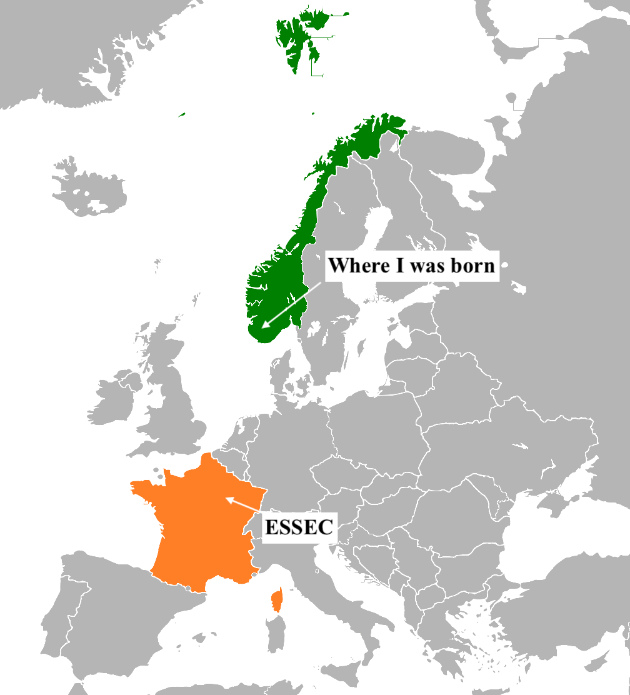

If life is a video game, the graphics are great. - Elon Musk
I am currently working on a startup company within the education sector. Created a website for the platform independantly through a mix of code and no-code tools. You can check it out for reference below 🚀
My Startup BusinessMy name is Odin, and altough I am a university student in France I barely know a single word of french. I originally grew up in Norway surrounded by farms and mountain fjords.
Here is a map of my life right now.
For the moment I in my first year studying business at ESSEC in Cergy. I was looking for a unqiue experience, and so far the this place has definitely delivered on the promise. Outside of classes amm a member of both a charity and finance association.
Programming 💻
French 🇫🇷
Financial Accounting 💱
Economics 🏛️
Communications 💬
Intro. Legal Questions ⚖️
Entrepreneurship 📈
Within my areas of passion I have several.
I am always willing to explore, and never afraid of new opportunities to create memories. Last summer I managed to get my skydiving license after jumpping out of a plane a few too many times (it was definitely a thrilling experience).
Next on my list is to get on a racetrack and set some lap times on the Spa-Francorchamps circuit